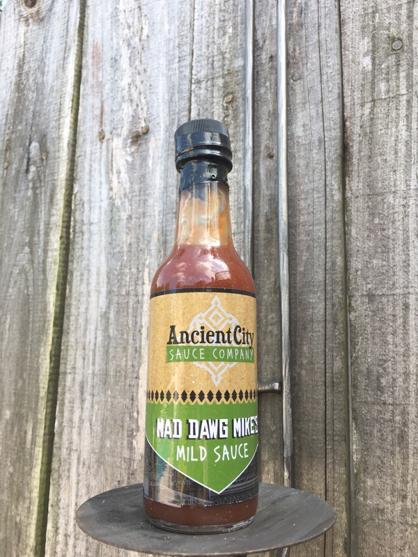
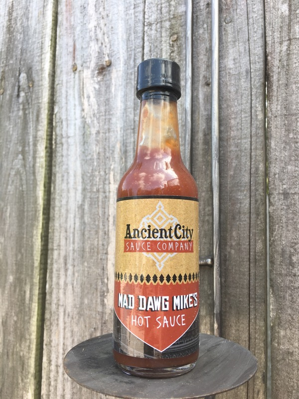
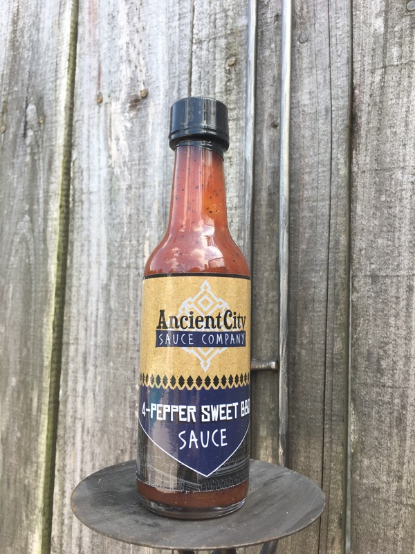

Our Product Line Up
Ancient City Sauce is introducing 6 products to begin our line up. ACS Spicy Mustard Sauce, Mad Dawg Mike's Mild Sauce and Mad Dawg Mike's Hot Sauce, ACS 4-Pepper Sweet BBQ Sauce, ACS Dry Rub and ACS Hot Honey Sauce (this one is new but, it is proving to be a requested favorite!)
Mad Dawg Mikes Mild Sauce
In case you don't like it too hot we've got you covered. Mad Dawg Mike's Mild Sauce is something you can use on just about any food out there. Its got all the flavor and spice you'd expect from the best, but with a heat that you can handle.
Mad Dawg Mikes Hot Sauce
Do you like it hot? Mad Dawg Mike's Hot Sauce will hit the spot! Hotter than his Mild, without losing the great taste! Spice up your favs from dips to chowder. Available in 2 sizes.
Spicy Mustard Sauce

One of our favs! Our Ancient City Spicy Mustard Sauce will be your "go to" for pretzels to baked beans.... and don't forget the potato salad! Blended with four peppers and just the right amount of spices, every BBQ will need a bottle or two. The Spicy Mustard Sauce comes in 2 sizes.
4-Pepper Sweet BBQ Sauce
Our 4-Pepper Sweet BBQ Sauce is a craving! Perfect for any meat with a flavor match made in heaven (and in our kitchen). If you plan to grill be sure you don't leave home without this one!